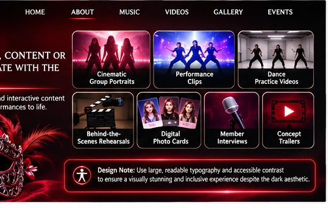

06 / CONTENT & IMAGERY
Make Every Reveal Feel Like an Event.
Research Question 6
What media and imagery will resonate with the audience?
The proposed media direction centers on cinematic group portraits, performance clips, dance-practice videos, behind-the-scenes rehearsals, digital photo cards, member interviews, concept trailers, and short subtitled videos. The dark visual aesthetic should still use large, readable typography and accessible contrast.

Cinematic portraits, concepts, and digital photo cards.
Dance practices, live performances, and promotional trailers.
Member interviews, backstage footage, and subtitled videos.
The proposed visual design will use crimson, ivory, black, and antique gold to create a dramatic K-pop aesthetic. The website will incorporate ornate masquerade motifs, professional editorial photography, high-contrast layouts, and mobile-friendly content cards.
Academic concept only. The band and proposed digital capabilities are fictional. This is not a functioning artist website. Visuals are illustrative.